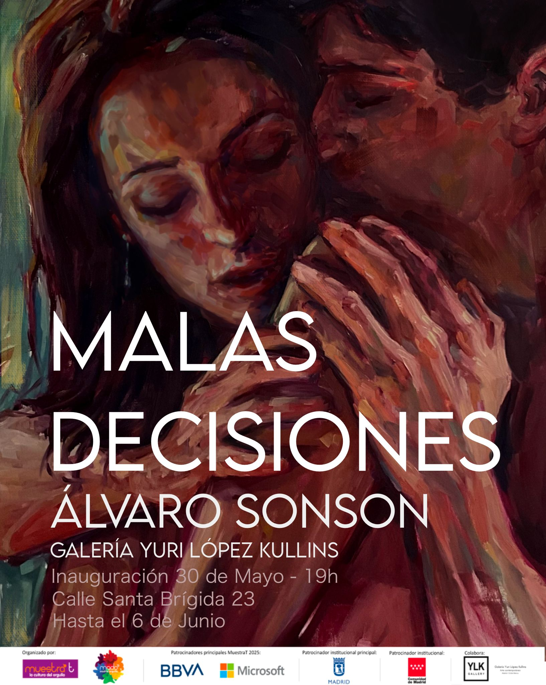
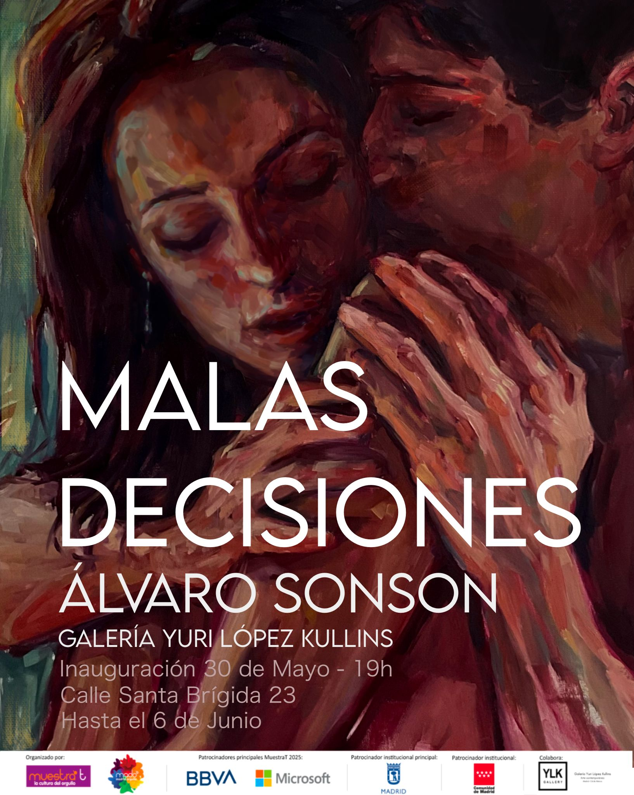

Álvaro Gómez Hodgson
Nacido en Santa Cruz de Tenerife (1997), Álvaro Sonson creció en un entorno impregnado de dibujo y pintura, convirtiendo el trazo en su lenguaje primordial para interpretar el mundo. Formado como pintor y artista plástico-visual pluridisciplinar, entiende el arte como una herramienta narrativa fundamental.
En su proceso creativo, el dibujo y la pintura son inseparables, coexistiendo como la luz y la sombra. Su obra destaca por la fluidez entre pinceladas, trazos y manchas, encontrando su esencia en una abstracción de temperamento inquieto. A través de la mancha pura y una ejecución de toques certeros, Álvaro expresa su visión del entorno con total libertad creativa.
Línea actual: “MALAS DECISIONES”
“MALAS DECISIONES” explora esos momentos en los cuales nos dejamos llevar, dejando de lado nuestra parte más racional. Instantes que, al mirar al pasado, recordamos como errores o anécdotas, pero que definen nuestra esencia más pura e irracional.
Este proyecto es una recopilación de aquellos instantes representados en una serie de óleos sobre lienzo de gran formato. Aquellas decisiones me han acompañado en mi camino y lo seguirán haciendo, pues son mi bien más preciado.
 

ESTUDIOS
- Título de Bachillerato de ARTES en la Escuela de Arte y Superior de Diseño Fernando Estévez.
- Título de Graduado en Bellas Artes por la Universidad de La Laguna.
- Prácticum universitario en el Museo de la Naturaleza y la Antropología (MUNA). Máxima calificación por el trabajo artístico y diseño del evento "XI Edición: Detectives de la Naturaleza".
- Trabajo de Fin de Grado (TFG): "Own land. Cultivo mi propio terreno", expuesto en la Facultad de Bellas Artes y salas de Tenerife y Fuerteventura.
EXPOSICIONES Y CONCURSOS
- Exposición individual: “Malas Decisiones” en YLK gallery. Madrid, Junio 2025.
- Exposición colectiva “Alégrame esas Pascuas” en la Factoría de Arte y Desarrollo. Comisariada por Javier Guardiola. Madrid, Diciembre 2024.
- Participación en “Invertarte” (Mercado de arte navideño) en Estudio Inverso. Madrid, Noviembre 2024.
- Exposición colectiva en Estudio Arriaza. Madrid, Noviembre 2024.
- Participación en MERKARTE 2024. Colegio de Arquitectos de Tenerife, Diciembre 2024.
- Open estudio inverso. Madrid, Septiembre 2024.
- Pop up en “Culto al cuerpo”, Malasaña. Madrid, Junio 2024.
- Exposición en “Abama Gallery” by Merkarte. Abama Resort Tenerife (hasta Julio 2024).
- Exposición colectiva en “The art Goma Gallery”.
- Exposición individual: “Malas decisiones”. Casa de la Cultura, Puerto del Rosario. Fuerteventura, 2023.
- Muestra colectiva de pintura, dibujo e ilustración "Ilustrísima 2023". EASD Fernando Estévez. Comisariada por Conrado Díaz.
- Selección evento multidisciplinar MERKARTE 2023.
- Exposición duo (dos autores): "H2O" (M. Hodgson & SonSon). Museo Municipal de Bellas Artes de Santa Cruz de Tenerife, 2022.
- Proyecto Solidario "Deconstruir un muro para La Palma". TEA - Tenerife Espacio de las Artes, 2022.
- "Tenerife Volcanic Fashion" (Talento y artes). Recinto Ferial, Cabildo de Tenerife, 2022.
- Exposición colectiva "Mercado de Arte". Sala L en La Recova y Plaza Isla de la Madera. Tenerife, 2022.
- Muestra colectiva "Ilustrísima 2022". Sala de Arte del Ayuntamiento de El Sauzal.
- Seleccionado XXIV Edición del Premio Nacional de Pintura Enrique Lite. Obra "Comunica". Sala La Capilla, ULL, 2021.
- Exposición colectiva "El Carnaval chicharrero". Centro de Arte La Recova, 2021/2022.
- Tercer Premio del Certamen de Pintura Profesional de Factoría de Cohesión. Puertos de Tenerife, 2020.
- Artista seleccionado Certamen Nacional de Dibujo, Fundación Caneja (Palencia). Obra: "Su deseo".
- Participación en MERKARTE (Ediciones 2019, 2020, 2021). Cabildo de Tenerife.
- Exposición colectiva Centenario Bauhaus: "ABC - A Bauhaus Centenario". Museo de Bellas Artes de Tenerife, 2019.
- Exposiciones colectivas Círculo de Amistad XII de Enero: "Miniaturas" (4ª, 5ª y 6ª edición), "Bodegones", "La flor en la PINTURA" y "Mar".
- Exposición colectiva “NEXT NATURE”, en Bonilla Garage. Marzo 2026.
- Participó en Pop up “Open studio” en Studio Inverso, Malasaña. Madrid, Febrero 2026.
- Participó en Pop up en Galería La Panera. Tenerife, Enero 2025.
- Exposición colectiva “Ilustrísima” en The Art Goma Gallery. Diciembre 2024.
- Exposición colectiva “XXS” en Casa Prenda Pacheco. Tenerife, Diciembre 2024.
- Participó en “PROYECTEA ROOMS” IBEROSTAR GRAND MENCEY. Tenerife, Diciembre 2024.
- Exposición colectiva “Miniaturas” en Círculo de la Amistad. Tenerife, Diciembre 2024.

PROMOCIÓN Y DIFUSIÓN EN MEDIOS
- Reportaje en el periódico “LA PROVINCIA” sobre la exposición individual “MALAS DECISIONES”.
- Artículo y entrevista en “Radio Sintonía” sobre la exposición individual “MALAS DECISIONES”.
- Portada en el periódico “EL DIA” por MERKARTE en Gira.
- Reportajes en “EL DIA” y “Diario de Avisos” sobre la exposición duo "H2O".
- Artículo en el periódico “Diario de Avisos” escrito por D. Joaquín Castro San Luis (Academia Española de Críticos de Arte).
- Debate sobre el "Arte en Canarias" para la emisora Marcha FM.
- Portada en el periódico “EL DIA” (Diciembre 2021).
- Entrevista y reportaje para TvCanaria.

Datos:
Nombre y apellidos: Álvaro Gómez Hodgson
Nombre artístico: Álvaro Sonson
Email: alvarosonson@gmail.com
Tlf: 616 302 730
Estudio: www.estudioinversomadrid.com
Instagram: @alvarosonson